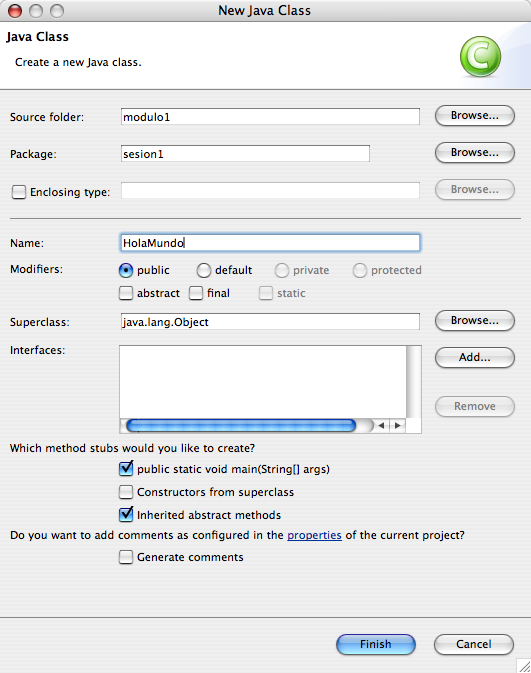
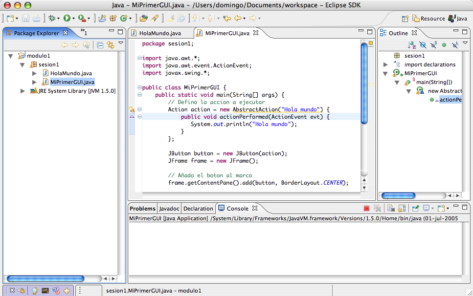
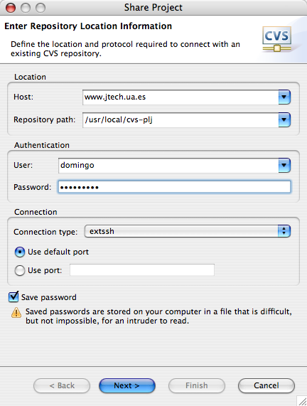
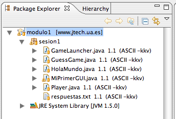

Sesión 1. Comenzando a programar en Java
El lenguaje Java
Java es un lenguaje de programación orientado a objetos que nace en
1995 en un grupo de trabajo de Sun Microsystems liderado por James
Gosling. Con una sintaxis similar a C y una filosofía orientada a
objetos como Smalltalk, muy pronto se convirtió en un lenguaje muy
popular. Hoy es uno de los lenguajes más usados en todos los entornos
de programación, desde móviles hasta servidores UNIX,
pasandos por dispositivos multimedia y ordenadores personales.
La plataforma Java consta de tres partes fundamentales:
- El lenguaje de programación mismo.
- La máquina virtual de Java, que permite la portabilidad en ejecución.
- Un conjunto de APIs, bibliotecas estándar para el lenguaje.
Una de las ideas fundamentales de Java es la portabilidad. Una de
las frases más conocidas sobre Java es la máxima WORE (Write Once Run
Everywhere, escribe una vez y ejecuta en cualquier lugar). Para
conseguir esto es fundamental el carácter interpretado del lenguaje. A
diferencia de otros lenguajes como C o C++, el compilador de Java no
produce código máquina de un procesador dado, sino que produce
un código intermedio o bytecode que es ejecutado por
una máquina virtual java (JVM). Esta máquina virtual
garantiza la portabilidad. Cualquier sistema operativo para el que se
haya desarrollado una máquina virtual Java (como Windows, Linux, Mac
OS X, Solaris, ...) puede ejecutar cualquier programa Java compilado a
bytecodes. Y no sólo eso, sino que también existen máquinas virtuales
para dispositivos como teléfonos móviles o descodificadores de
televisión digital. En estas plataformas también se pueden ejecutar
los programas Java.
La siguiente figura muestra el proceso de compilación y ejecución
de un programa Java:
El hecho de que la ejecución de los programas Java sea realizada
por un intérprete, en lugar de ser código nativo, ha generado la
suposición de que los programas Java son más lentos que programas
escritos en otros lenguajes compilados (como C o C++). Aunque esto es
cierto en algunos casos, se ha avanzado mucho en la tecnología de
interpretación de bytecodes y en cada nueva versión de Java se
introducen optimizaciones en este funcionamiento. En la última versión
de Java se introduce una nueva JVM servidora que queda residente en el
sistema. Esta máquina virtual permite ejecutar más de un programa Java
al mismo tiempo, mejorando mucho el manejo de la memoria. Por último,
es posible encontrar bastantes benchmarks en donde los programas Java
son más rápidos que programas C++ en algunos aspectos.
El tirón final en la popularidad de Java se debió a Internet y la
World Wide Web. La JVM se incorporó a los navegadores web más
populares de la época (Mosaic y Netscape) y posibilitó la distribución
por Internet de programas Java y la ejecución de estos programas en
los navegadores web. Estos programas se
denominaron Applets. Hoy en día los applets han caído en
desuso, pero Java sigue presente en Internet en forma de JavaScript,
páginas JSP, servlets, Enterprise JavaBeans, servicios web y otras
muchas tecnologías.
El lenguaje de programación Java ha ido sufriendo distintos cambios
a lo largo de su historia. La última versión estable se denomina Java
5.0. El desarrollo del lenguaje y de las API (Interfaces de
Programación) se realiza por comités en los que participan, a parte de
Sun Microsystems, representantes de las más importantes empresas
tecnológicas, así como usuarios destacados del lenguaje. El proceso en
el que se propone un tema de innovación en el lenguaje, se forma un
grupo de trabajo y se elabora y aprueba una propuesta final se
denomina JCP (Java Community Process).
Otra característica fundamental de Java es el extenso número de
APIs (definidas por clases y paquetes) desarrallodas para el
lenguaje. Estas APIs se definen y desarrollan bajo el modelo de
JCP y, cuando están maduras, se incorporan en el lenguaje. Por
ejemplo, en la edición 5.0 de Java se incorporan paquetes:
javax.crypto: conjunto de clases e interfaces para
operaciones de criptografía.java.sql: API para acceder y procesar datos
almacenados en una fuente de datos (normalmente una base de datos
relacional).java.awt y javax.swing: clases e interfaces
para escribir programas de interfaz gráfica.
Se han definido varias distribuciones de Java orientadas a
distintos tipos de aplicaciones. Todas ellas tienen como núcleo el
lenguaje de programación, pero se diferencian en las APIs
incluídas. Las más importantes son:
- J2ME: Java 2 Micro Edition. Distribución de Java orientada a
aplicaciones para dispositivos móviles como teléfonos móviles o
PDAs.
- J2SE: Java 2 Standard Edition. Edición de Java orientada a
aplicaciones de escritorio en ordenadores personales.
- J2EE: Java 2 Enterprise Edition. Distribución de Java orientada
a aplicaciones distribuidas que se ejecutan en red.
Ejercicio 1: Búsqueda en Web sobre Tecnologías Java
- Busca en Google el nombre de 3 dispositivos (distintos de un
ordenador) en donde se puedan ejecutar programas Java. Describe
brevemente cada uno de ellos.
- Busca en
java.sun.com y encuentra 4 APIs que se
incluyan en Java 5.0 (distintas de las que hemos comentado
anteriormente). Indica el nombre del paquete (o paquetes) y
descríbe cada uno en un par de frases.
- Busca en internet el nombre de 2 JSR de Java que están en
desarrollo en la actualidad o que se han cerrado
recientemente. Puedes usar como palabra de búsqueda JSR y "public
review". El estado de "Public Review" de una especificación se
refiere a una especificación que se ha cerrado y que se ofrece al
público para recibir comentarios.
- Escribe las respuestas en un fichero de texto, con el nombre
de
respuestas.txt.
Compilación y ejecución de programas Java
Para programar en Java es necesario el compilador y la máquina
virtual. Ambos programas están incluídos en el JDK (Java Development
Kit, kit de desarrollo de Java) que distribuye Sun. Existen otros
compiladores y máquinas virtuales desarrollados por otras empresas
como IBM o BEA weblogic. Pero todos ellos son compatibles con las
especificaciones de Java.
El nombre del compilador Java es javac, y el de la máquina
virtual java es java. Se les invoca desde línea de comando de
la siguiente forma:
> javac Ejemplo.java
> java Ejemplo
Los programas javac y java se encuentran en el
JDK. En el ejercicio siguiente vamos a instalarlos en el ordenador.
Ejercicio 2: Instalación del JDK de Sun
-
Instala el JDK (Java Developer Kit) 5.0 (se encuentra
en la sección de recursos de la web del curso). Es el
conjunto de herramientas que Sun proporciona para desarrollar en
Java. Acepta las opciones por defecto que te propone la
instalación.
-
Comprueba que la instalación ha funcionado correctamente. Para
ello abre una ventana del sistema operativo y prueba a ejecutar el
compilador de Java.
> C:\Archivos de programa\Java\jdk1.5.0_04\bin\javac
-
Para hacer más sencillas las llamadas a los comandos, actualiza
la variable de entorno PATH, añadiendo el
directorio C:\Archivos de programa\Java\jdk1.5.0_04\bin
> set PATH=%PATH%;\Archivos de programa\Java\jdk1.5.0_04\bin
Comprueba que todo funciona bien escribiendo:
> java -version
Los ficheros fuente de Java tienen la extensión .java.
Cada fichero .java define una clase Java pública (y,
posiblemente, más de una clase privada usada por la clase pública).
Los ficheros de código intermedio generados por la compilación tienen
la extensión .class. La compilación de un
fichero .java puede generar más de un
fichero .class, si en el fichero .java se
define más de una clase.
Un detalle muy importante es que el nombre del
fichero .java debe corresponder con el nombre de la clase
pública definida en él. Si no es así, el compilador dará un error de
compilación.
Para ejecutar un programa Java, debes invocar con la JVM una clase
que contenga un método estático llamado main. Este es el
método que se ejecutará. Ya explicaremos más adelante qué es un método
estático.
Veamos el primer ejemplo, el típico programa Hola
mundo que escribe una frase en la salida estándar:
public class HolaMundo {
public static void main(String[] args) {
System.out.println("Hola mundo");
}
}
El programa debe escribirse en un fichero que tenga el mismo nombre
que la clase que se define. En este caso, debe
llamarse HolaMundo.java. En la clase se define un método
estático llamado main que es el que se ejecuta cuando se
invoca la clase con la máquina virtual java usando el comando:
>java HolaMundo
Vamos a probarlo en el siguiente ejercicio.
Ejercicio 3: Primeros programas Java
Crea el directorio sesion1, este va a ser el
directorio de trabajo donde vas a guardar los programas ejemplo de
esta primera sesión. Escribe el siguiente programa Java en un
fichero de texto con un editor de texto cualquiera, como
el Notepad. Graba el programa con el
nombre HolaMundo.java (es importante la "H"
mayúscula).
public class HolaMundo {
public static void main(String[] args) {
System.out.println("Hola mundo");
}
}
Compila la clase, lista los ficheros del directorio y verás que
se ha generado el fichero HolaMundo.class que contiene
los bytecodes:
> javac HolaMundo.java
> dir
. <DIR> 16/06/04 1:59a .
.. <DIR> 16/06/04 1:59a ..
EJEMPL~1 CLA 433 16/06/04 2:07a HolaMundo.class
EJEMPL~1 JAV 130 16/06/04 1:59a HolaMundo.java
El fichero HolaMundo.class es el que se va a
ejecutar en la máquina virtual java (JVM). Llama a la JVM pasándole
como argumento el nombre de la clase (HolaMundo) y
verás como aparece el mensaje "Hola mundo" por la salida
estándar. No es demasiado espectacular, pero has conseguido compilar
y ejecutar tu primer programa Java:
>java HolaMundo
Hola mundo
- Vamos ahora a ver un ejemplo un poco más atractivo. Escribe
ahora el siguiente programa, y sálvalo con el nombre
de
Ejemplo2.java.
import java.awt.*;
import java.awt.event.ActionEvent;
import javax.swing.*;
public class MiPrimerGUI {
public static void main(String[] args) {
// Defino la accion a ejecutar
Action action = new AbstractAction("Hola mundo") {
public void actionPerformed(ActionEvent evt) {
System.out.println("Hola mundo");
}
};
JButton button = new JButton(action);
JFrame frame = new JFrame();
// Añado el boton al marco
frame.getContentPane().add(button, BorderLayout.CENTER);
// Dimensiones del marco
int frameWidth = 100;
int frameHeight = 100;
frame.setSize(frameWidth, frameHeight);
// Muestro el marco
frame.setVisible(true);
// Le digo al frame que salga de la aplicacion
// cuando se cierre
frame.setDefaultCloseOperation(JFrame.EXIT_ON_CLOSE);
}
}
-
Compila el programa y dará un mensaje de error. ¿Cuál es el
error? ¿Cómo corregirlo? (contestalo en el mismo fichero
respuestas.txt del ejercicio anterior). Corrige el error y
ejecuta la clase. Deberá aparecer la siguiente ventana, y cada vez
que pinches en el botón debería aparecer "Hola mundo" en la salida
estándar.
No intentes entender el código. En la última sesión del curso
veremos una introducción a la programación de interfaces de usuario
en Java.
Definición de paquetes
Las clases Java se organizan en paquetes. Un paquete contiene un
conjunto de clases y también puede contener otros paquetes. Es una
estructura similar a la de los directorios y ficheros. De hecho, ya
que las clases y paquetes deben residir en la estructura de ficheros
del sistema operativo, los paquetes se definen como directorios del
sistema operativo.
Existe el convenio de que los nombres de los paquetes deben tener
letras minúsculas, mientras que los nombres de las clases deben
comenzar siempre con mayúscula.
En la figura siguiente vemos que las
clases Punto2D, Segmento2D, Angulo
y Dibujo residen en el directorio geometria
que a su vez reside en el directorio simulador. Esto
define el paquete simulador.geometria.
Hay que indicar en todos los ficheros java en qué paquete se
encuentran usando la plabra package. Las rutas de
paquetes se separan con puntos ".". Así, por ejemplo, para declarar
que la clase Punto2D se encuentra en el directorio
geometria del directorio simulador hay
que comenzar el fichero Punto2D.java con la siguiente
línea:
package simulador.geometria;
En esta línea estamos declarando que la clase
Java Punto2D se encuentra en el
paquete simulador.geometria. Esto obliga a que el
fichero Punto2D.java esté situado en el
directorio geometria que, a su vez, deberá residir en el
directorio simulador. Esto es, el fichero Punto2D.java
debe tener como path:
simulador/geometria/Punto2D.java (en Linux)
simulador\geometria\Punto2D.java (en Windows)
Para referirse a una clase hay que indicar su ruta completa,
incluyendo el nombre del paquete en el que reside. Así, el nombre
de la clase Punto2D será:
simulador.geometria.Punto2D
Ejercicio 4: Uso de paquetes
-
Vamos a declarar que la clase HolaMundo se defina en
el paquete sesion1. Para eso debemos cambiar
el código fuente de la siguiente forma.
package sesion1;
public class HolaMundo {
public static void main(String[] args) {
System.out.println("Hola mundo");
}
}
Compila el programa. Verás que aunque el directorio
sesion1 no esté creados, la compilación no produce
ningún error. Intenta ahora ejecutar el programa de la misma forma
que lo hiciste en el ejercicio anterior. Verás que ahora sí que se
produce un error, porque la clase HolaMundo no reside
en el paquete declarado.
Para solucionar el error deberás crear la estructura de
directorios del paquete. En este caso sólo hay que crear el
directorio sesion1 y colocar allí la clase
compilada. Puedes hacerlo (en MS-DOS) con:
> javac HolaMundo.java
> mkdir sesion1
> copy HolaMundo.class sesion1
> del HolaMundo.class
Por último, para ejecutar el programa recién compilado hay que
llamar a la clase indicando todo su camino
(sesion1.HolaMundo).
> java sesion1.HolaMundo
Una forma más directa de hacer lo mismo es usando la
directiva -d del compilador de Java. Esta directiva
permite indicarle al compilador un directorio en el que vamos a
dejar los ficheros .class generados. Si los
ficheros .class están en un package, el compilador se
encargará de crear los directorios necesarios:
Borra los directorios que acabas de crear, incluyendo el
fichero HolaMundo.class y vuelve a compilar el
fichero HolaMundo.java
> deltree sesion1
> javac HolaMundo.java -d .
> java sesion1.HolaMundo
- Un par de preguntas que debes contestar en el
fichero
respuestas.txt:
Supongamos que quisieras crear la
clase HolaMundo en el
paquete plj.sesion1. ¿Qué tendrías que hacer?
¿Qué tipos de clases pondrías en el
paquete plj? Escribe 2 nombres de clases que piensas
que podrían ir bien en este paquete.
La variable de entorno CLASSPATH
¿Dónde colocar el directorio simulador para que el
intérprete de la máquina virtual Java lo encuentre? El directorio se
puede colocar en un directorio estándar de la distribución de Java en
el que la máquina virtual busca las clases. O también se puede colocar
en un directorio cualquiera e indicar a la máquina virtual que en ese
directorio se encuentra un paquete Java. Para ello se utiliza la
variable del entorno CLASSPATH. Si la variable no está
definida, se buscan las clases en el directorio actual y en el
directorio estándar de clases de Java (el cual depende del sistema
operativo en el que estemos ejecutando Java).
Los directorios de paquetes y los ficheros de clases pueden
compactarse en ficheros JAR (por
ejemplo simulador.jar). Un fichero JAR es un fichero de
archivo (como ZIP o TAR) que contiene comprimidos un conjunto de
directorios y ficheros, o sea un conjunto de paquetes y clases. Es
normal comprimir toda una librería de clases y paquetes comunes en un
único fichero JAR. Ya veremos más adelante cómo crear ficheros
JAR.
Para que el compilador y el intérprete pueda usar las clases de un
fichero JAR, hay que incluir su camino (incluyendo el nombre del
propio fichero JAR) en el CLASSPATH.
Ejercicio 5: Definiendo la variable CLASSPATH
-
Supongamos que estamos en el
directorio C:\cursojava, en el que se encuentra el
paquete sesion1 y, dentro de él, la clase
compilada HolaMundo.class. Probemos de nuevo que la
JVM encuentra la clase:
C:\cursojava> java sesion1.HolaMundo
Hola mundo
La clase se encuentra porque, al no estar definida la variable
de entorno CLASSPATH se toma el directorio actual como
el directorio en el que buscar las clases. Supongamos que nos
movemos al directorio padre y que intentamos ejecutar desde allí la
clase sesion1.HolaMundo. Obtendremos un mensaje de
error:
C:\cursojava> cd ..
C:\> java sesion1.HolaMundo
<MENSAJE DE ERROR>
Si actualizamos el CLASSPATH de la siguiente
forma, java podrá encontrar de nuevo la
clase HolaMundo
C:\> set CLASSPATH=C:\cursojava
C:\> java sesion1.HolaMundo
HolaMundo
-
Contesta las siguientes preguntas en el
fichero respuestas.txt.
¿Qué sucede si actualizas el CLASSPATH de la siguiente forma?:
set CLASSPATH=C:\
¿Funciona la llamada a la clase HolaMundo desde el
directorio C:\cursojava?
¿Se arregla la llamada cuando actualizas el CLASSPATH así?:
set CLASSPATH=.;C:\
¿Por qué?
-
Por último, vamos a crear un fichero JAR en el que se incluya la
clase HolaMundo y el paquete en el que reside:
C:\cursojava> jar cvf ejemplo.jar sesion1
manifest agregado
agregando: sesion1/(entrada = 0) (salida= 0)(almacenado 0%)
agregando: sesion1/HolaMundo.class(entrada = 442)
(salida= 305)(desinflado 30%)
Actualizamos el CLASSPATH con el camino del fichero JAR y ya
podemos llamar al intérprete
C:\cursojava> set CLASSPATH=C:\cursojava\ejemplo.jar
C:\cursojava> deltree sesion1
C:\cursojava> java sesion1.HolaMundo
Hola mundo
- Contesta en el fichero
respuestas.txt las
siguientes preguntas.
¿Qué valor deberías poner en el CLASSPATH
para poder usar la clase misclases.utils.Robot que
tiene siguiente PATH en el sistema
operativo: C:\java\lib\misclases\utils\Robot.class?
¿Y si la clase se encuentra en el mismo paquete dentro
del fichero JAR misclases.jar, que tiene
el PATH: C:\java\lib\misclases.jar?
Entornos integrados de desarrollo para Java
Java es un lenguaje enormemente complicado (cuando vas a
desarrollar un gran proyecto) como para poder dominarlo usando
el Notepad. Para programar en Java es conveniente utilizar un
IDE (entorno integrado de desarrollo, en inglés).
Hace algunos años, era difícil encontrar IDEs de código abierto
que compitieran con los IDEs comerciales que distribuían Borland y
otras casas. Hoy es al revés. Existen dos IDEs de libre distribución
que tienen una potencia difícilmente alcanzable por el resto. Se trata
de Eclipse y NetBeans.
Eclipse está desarrollado por un consorcio en el que se incluyen
IBM y otras importantes empresas relacionadas con el mundo de Java
para entornos UNIX.
NetBeans está desarrollado por Sun y es el IDE oficial
propuesto por Sun.
Nosotros vamos a utilizar en el curso Eclipse, por considerar que
es algo más robusto y por que está más extendido que NetBeans. Pero
cada vez más gente le está echando un ojo a NetBeans. Sobre todo los
que hacen aplicaciones J2EE (Java Enterprise Edition) y desarrollan
páginas JSP, servlets o componentes distribuidos.
Ejercicio 6: Instalación de Eclipse
-
Descomprime el fichero Eclipse (se encuentra en la
sección recursos de la web del curso) correspondiente a
tu sistema operativo en algún directorio del sistema. El fichero es
un archivo ZIP que contiene todos sus ficheros bajo el
directorio eclipse. Por ejemplo, en Windows
descomprímelo en C:\ y en Linux lo puedes descomprimir
en /usr/local/ (si tienes permiso de super usuario; si
no, lo puedes descomprimir en /home/<user>/). En
Mac OS X debes descomprimir el fichero y arrastrar la aplicación
Eclipse a la carpeta de aplicaciones.
-
Arranca Eclipse haciendo doble click sobre la aplicación o, si
estás en Linux, actualizando el PATH para incluir el
nuevo directorio recién creado eclipse/bin y ejecutando
el comando eclipse.
Eclipse es un programa escrito en Java y debes tener instalado
el JDK, como has hecho en un ejercicio anterior, para que
funcione. Cuando Eclipse arranca por primera vez pide el directorio
de trabajo. Puedes aceptar el que te sugiere
(eclipse\workspace), o indicarle alguno
propio.
-
Cuando aceptes el directorio de trabajo, aparecerá la siguiente
ventana de presentación.
Desde esta ventana de presentación puedes ver tutoriales,
ejemplos o entrar directactemente en la zona de trabajo (esquina
superior derecha). Haz esto último para comenzar a trabajar en
Eclipse. Podrás volver a la ventana de presentación en cualquier
momento con la opción Help > Welcome). Quédate por
ahora en la zona de trabajo:
Una vez instalado Eclipse vamos a compilar en él las clases que hemos compilado antes en línea de comando.
Ejercicio 7: Compilación y ejecución en Eclipse
-
Crea un nuevo proyecto Java. Para ello situa el ratón en
la vista Package Explorer, pulsa el botón
derecho y escoge la opción New project (también puedes
crearlo con la opción File > New >
Project). Selecciona el wizard Java Project:
Llama al proyecto modulo1 y escoge como JDK
compliance la opción 5.0. Esto significa que el editor Java
de Eclipse va aceptar código de la versión 5.0 de Java (también
llamada versión 1.5). La mayoría del código que vamos a escribir en
el curso es propiamente de Java 1.4.2, pero al usar esta opción
también podemos escribir código que sea específico de la última
versión de Java.
Pulsa Finish y se creará el proyecto.
Abre otra ventana con el explorador del sistema de ficheros (o
un terminal) y lista los ficheros del directorio de trabajo de
Eclipse. Verás que se ha creado un nuevo directorio con el mismo
nombre que el proyecto que acabas de crear.
En un proyecto se agrupan un conjunto de clases y paquetes. Vamos
a usar este proyecto recién creado para todos los ejercicios de este
primer módulo, separándolos en un paquete por sesión.
-
Crea el paquete sesion1. Para ello pincha el
paquete modulo1, pulsa el botón derecho y
escoge New > Package. Aparecerá una ventana de diálogo
en la que deberás escribir el nombre del
paquete. Escribe sesion1.
-
Vamos ahora a crear la clase HolaMundo que ya
conocemos. Selecciona el paquete recién creado y, con el botón
derecho, escoge la opción New > Class. Dale el
nombre HolaMundo y activa la opción para que cree un
esqueleto del método "public static void main (String[]
args)".

Pulsa en Finish y aparecerá el editor de Eclipse
con un esqueleto de la clase. Al crear la clase, Eclipse introduce
automáticamente el nombre del paquete en el que se encuentra y
también añade comentarios con tareas por hacer que puedes ver en la
vista Tasks. Puedes borrar estos comentarios y se
borran automáticamente las tareas. Escribe en este fichero el
programa HolaMundo del ejercicio anterior. Durante la
escritura podrás comprobar que el editor chequea la sintaxis,
indicándote si hay un error, y también te ayuda a completar las
llamadas a los métodos.
Una vez escrita la clase, vamos a ejecutarla. Para ello, pincha
el nombre de la clase en la vista del explorador de paquetes y, con
el botón derecho, escoge la opción Run As > Java
Application (también puedes seleccionar en el menú la
opción Run As > Java Application). Aparecerá la
vista Console con la salida de la ejecución del
programa.

-
Si examinas en el explorador del sistema de ficheros o en una
terminal el directorio modulo1 creado en el espacio de
trabajo de Eclipse, verás que se encuentra el
fichero HolaMundo.java y el fichero
compilado HolaMundo.class. Eclipse ha compilado
automáticamente el fichero java. Puedes examinar los ficheros del
sistema proyecto cambiando a la
perspectiva Resource. Para ello debes pinchar en el
icono junto al nombre Java que hay en la esquina superior
derecha. Selecciona la opción Other... y escoge la perspectiva
Resource. Podrás explorar en la vista de explorador de
paquetes y aparecerá algo como esto:
Para volver a la perspectiva Java debes pulsar en la
pestaña Java.
-
Escribe y ejecuta la clase MiPrimerGUI en el
paquete sesion1. La perspectiva de Eclipse deberá tener el
siguiente aspecto al terminar:

-
Ejecuta la clase de la misma forma que el
programa HolaMundo. Puedes comprobar que no hay nada
raro en tener dos clases ejecutables en el mismo proyecto y
en el mismo paquete.
Vamos ahora a un ejercicio en el que compilarás un programa algo más
completo.
Ejercicio 8: El juego de los números
-
Vamos a ver un ejemplo algo más completo, en el que se utilizan
objetos y clases definidas por el usuario. Escribe y compila la
siguiente clase, es una clase con un único método
(startGame). Lo siguiente es una imagen, por lo que
tendrás que teclearlo todo. Corrige los errores (seguro que tendrás
más de uno al copiar!) hasta que los únicos errores pendientes sean
los derivados de que la clase Player no está definida
(6 errores). Hazlo todo en el paquete ya
creado sesion1.
-
Escribe y compila la clase Player en el mismo
paquete para que el programa funcione correctamente. Como verás,
ninguna clase tiene el método main, por lo que no se
puede lanzar el programa; escribe la
clase GameLauncher, con el método main que lance el
programa. El resultado que aparece en la salida estándar debe ser
algo como:
Estoy pensando un numero entre 0 y 9 ...
El numero a adivinar es: 2
Yo digo: 0
Yo digo: 6
Yo digo: 2
El jugador 1 dice: 0
El jugador 2 dice: 6
El jugador 3 dice: 2
Tenemos un ganador!
El jugador 1 ha hacertado?: false
El jugador 2 ha hacertado?: false
El jugador 3 ha hacertado?: true
Y la apariencia de Eclipse después de crear todas las clases
debe ser algo así:
El sistema CVS
Ya estamos a punto de terminar. El último ejercicio es una pequeña
guía para publicar todo lo que has hecho durante esta sesión en el
repositorio CVS. Pero antes de realizarlo, vamos a saber un poco más
qué es eso de CVS.
CVS viene de las iniciales en inglés de Sistema de Versiones
Concurrente. Se trata de una implementación de un sistema de
control de versiones: mantiene todos los cambios de un conjunto de
ficheros, como un proyecto de software y permite que varios
desarrolladores colaboren en el mismo proyecto. CVS se ha hecho muy
popular en el mundo de código abierto.
CVS utiliza una arquitectura cliente-servidor. Un servidor
almacena el repositorio con las versiones actuales del proyecto y la
historia de cambios. Los clientes se conectan para obtener
(check-out) una copia completa del proyecto, trabajar en la
copia y a continuación publicar (check-in) los
cambios. Existen clientes de CVS en todos los sistemas
operativos. Nostros vamos a usar el cliente que lleva incorporado
Eclipse. Es un cliente muy fácil de usar con una interfaz gráfica muy
clara y está totalmente integrado en el entorno de programación.
Varios clientes pueden editar las copias del proyecto
concurrentemente. Cuando se publican los cambios, el servidor intenta
actualiza los ficheros del proyecto. Si se produce un fallo, por
ejemplo debido a que dos clientes han modificado el mismo fichero, el
servidor deniega la segunda operación de publicación e informa al
cliente del conflicto. El usuario debe corregir el conflicto a mano y
volver a publicar. Si la operación tiene éxito, los números de versión
de todos los ficheros involucrados se incrementa automáticamente y el
servidor CVS guarda una descripción del cambio proporcionada por el
usuario, la fecha y el nombre del autor en los ficheros de log.
Los clientes pueden también comparar diferentes versiones de los
ficheros, solicitar una historia completa de los cambios o también
pueden obtener una instantánea histórica del proyecto tal y como
estaba en una fecha dada o en un número de versión dado.
Los clientes pueden también usar el comando actualizar
(update) para poner al día la copia local del proyecto y
bajarse las últimas modificaciones publicadas por otros clientes.
CVS puede también mantener distintas ramas de un
proyecto. Por ejemplo, una versión lanzada de un proyecto software
puede tener más de una rama y cada rama tener una control separado de
cambios.
Nosotros vamos a usar sólo una mínima parte de las funcionalidades
de CVS. Lo vamos a usar para publicar los ejercicios en un repositorio
común. Cada alumno va a tener su directorio CVS independiente en el que
publicar los ejercicios. Los profesores también tendremos acceso a
esos directorios y podremos corregir fácilmente los ejercicios
entregados. Lo vamos a ver paso a paso en el siguiente (último)
ejercicio.
Ejercicio 9: Publicación en el repositorio CVS
Vamos a terminar la sesión de hoy publicando todos los ejercicios
en el repositorio CVS.
-
Lo primero es incorporar el fichero respuestas.txt
al proyecto de Eclipse. Abre un explorador del sistema de ficheros
en el que puedas ver el
fichero respuestas.txt. Arrástralo a la ventana de
eclipse, sobre el explorador de paquetes y en el
módulo sesion1. Debe quedar así:
Pincha el nombre del proyecto y pulsa el botón
derecho. Selecciona la opción Team > Share
project...:

Introduce los datos del repositorio CVS:
- Servidor:
www.jtech.ua.es
- Ruta del repositorio:
/usr/local/cvs-plj
- Usuario: tu nombre de usuario en la web de PLJ
- Contraseña: tu contraseña de usuario en la web de PLJ
- Tipo de conexión:
extssh

Ahora debes seleccionar el directorio del repositorio CVS en el
que publicar los ficheros del proyecto. Debes pinchar la última
opción (Use an existing module ...) para que puedas
desplegar los distintos directorios del repositorio en la ventana
del asistente. Habrá un directorio por alumno del curso. Abre la
carpeta con tu nombre de usuario y verás que contiene a su vez otras
tres carpetas. Selecciona la primera de ellas
(modulo1).
Acepta las ventanas que aparecen y llegarás a una ventana en la
que Eclipse resume las acciones que van a realizarse en el
repositorio CVS. En este caso se van a añadir (de ahí el signo "+"
en la flecha) al repositorio todos los ficheros del proyecto.
Por último, cuando pulses Finish Eclipse publicará
los cambios en el repositorio. Te permite escribir un mensaje con la
indicación de qué cambios has realizado. En este caso puedes
escribir "versión inicial", o algo similar. Una vez publicados los
ficheros, cambiarán los iconos que aparecen en el explorador de paquetes.

Por último, vamos a probar a realizar un cambio en algún
fichero y a actualizar el repositorio con este cambio. Modifica uno
de los ficheros, por ejemplo el
fichero respuestas.txt. Verás que aparece un símbolo
">" junto a él, para indicar que está modificado con respecto a la
versión del repositorio.
Pulsa el proyecto y selecciona con el botón derecho la
opción Team > Synchronize with repository. Eclipse te
consulta si quieres cambiar a la perspectiva Team
Synchronizing. Dile que sí y aparecerá una vista como la
siguiente.
En la ventana se muestran los cambios de la copia local respecto
al repositorio. En este caso se indica que para realizar una
sincronización hay que subir (flecha hacia la derecha) al
repositorio los cambios del fichero respuestas.txt. Si
hubiera algún cambio en el repositorio con respecto a la copia local
también aparecería mostrado, en este caso con una flecha hacia la
izquierda. Esto sucederá cuando el profesor corrija los
ejercicios. En este caso, puedes publicar los cambios pulsando en el
icono que aparece resaltado y que tiene la flecha amarilla hacia la
derecha. Es la forma gráfica de hacer un commit en el
repositorio CVS. Puedes escribir un comentario sobre los cambios que
has realizado.
Pulsa Finish y se publicará el cambio. Termina
cambiando a la perspectiva Java y cerrando Eclipse.